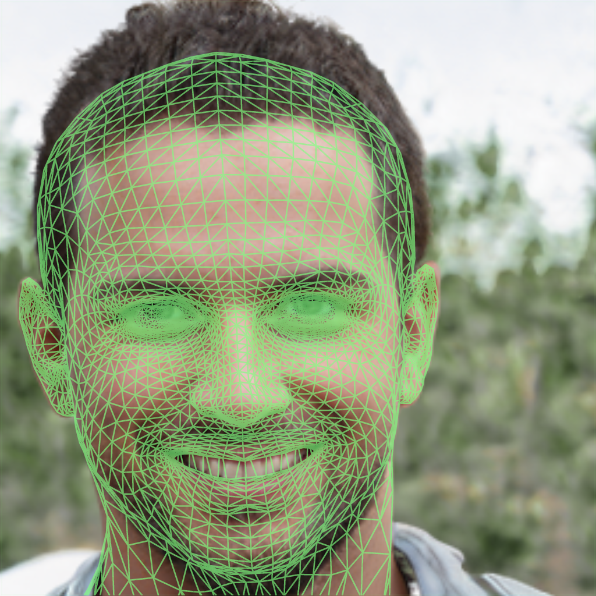
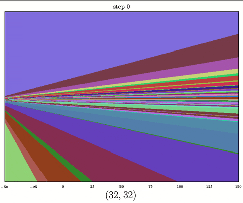
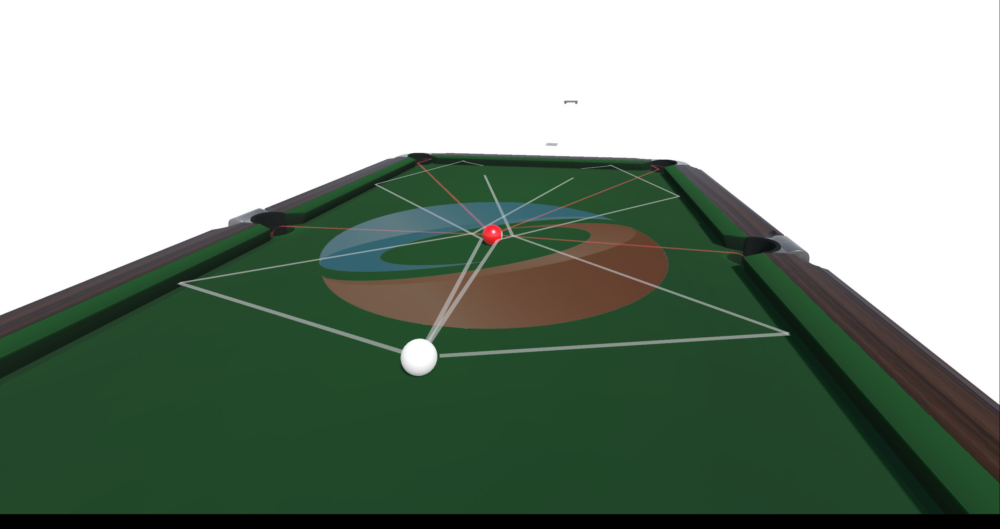
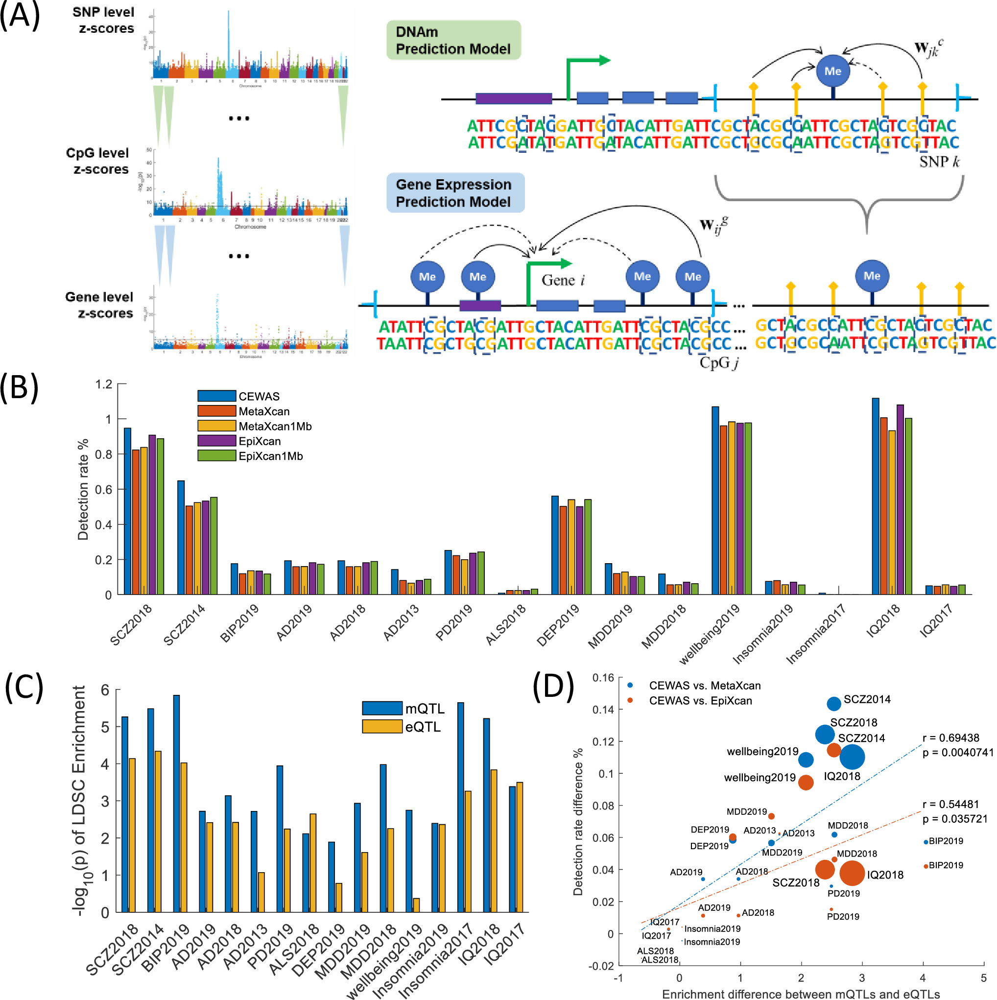
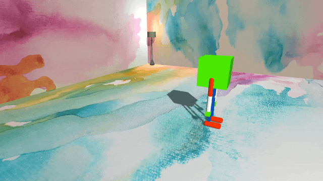
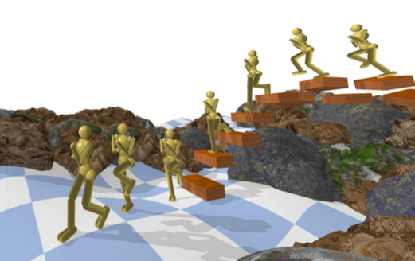
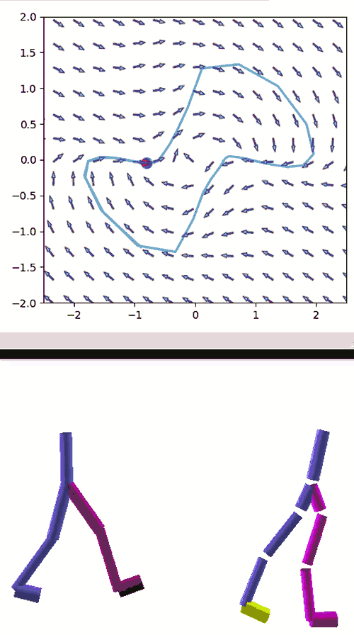
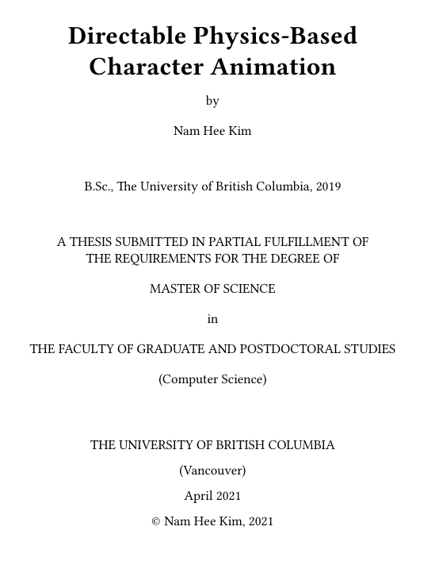

Nam Hee Gordon Kim
| I am a Ph.D. student at Aalto University. I am the organizer of Team ARAM (Animation, Robotics, and Machine Learning), a student-led research group pushing the envelope of peer-to-peer research collaboration in Finland/Europe. Prior to that, I received a M.Sc. from the University of British Columbia, advised by Professor Michiel van de Panne. My work lies in the intersection of computer animation and machine learning, with a focus of reinforcement learning and physical simulation as a driver of behaviour emergence for various character morphologies and interaction scenarios. I have previously worked at UBC as a sessional lecturer in machine learning and data mining, at Ubisoft La Forge as an R&D intern, at Amazon as a software engineer (AWS RDS, Delivery Experience) and data scientist (AWS SageMaker), and at Medical Informations Corp as a frontend developer. My research is funded by Finnish Center for Artificial Intelligence (FCAI) and the Natural Sciences and Engineering Council of Canada (NSERC). |
Publications
— 2023 —
 |
Discovering Fatigued Movements for Virtual Character Animation Noshaba Cheema, Rui Xu, Nam Hee Kim, Perttu Hämäläinen, Vladislav Golyanik, Marc Habermann, Christian Theobalt, Philipp Slusallek ACM SIGGRAPH Asia 2023 [Project page] [Paper] |
 |
A Hybrid Generator Architecture for Controllable Face Synthesis Dann Mensah, Nam Hee Kim, Miikka Aittala, Samuli Laine, Jaakko Lehtinen ACM SIGGRAPH 2023 [Project page] [Paper] |
— 2022 —
 |
Understanding the Evolution of Linear Regions in Deep Reinforcement Learning Setareh Cohan, Nam Hee Kim, David Rolnick, Michiel van de Panne Neural Information Processing Systems 2022 (NeurIPS) [Project page] [Paper] |
 |
Learning High-Risk High-Precision Motion Control Nam Hee Kim, Markus Kirjonen, Perttu Hämäläinen ACM SIGGRAPH Conference on Motion, Interaction and Games 2022 (MIG) [Project page] [Paper] |
— 2021 —
 |
Cascading Epigenomic Analysis for Identifying Disease Genes from the Regulatory Landscape of GWAS Variants Bernard Ng, William Casazza, Nam Hee Kim, Chendi Wang, Farnush Farhadi, Shinya Tasaki, David A Bennett, Philip L De Jager, Christopher Gaiteri, Sara Mostafavi PLoS Genetics [Paper] |
 |
Flexible Motion Optimization with Modulated Assistive Forces Nam Hee Kim, Hung Yu Ling, Zhaoming Xie, Michiel van de Panne ACM SIGGRAPH / Eurographics Symposium on Computer Animation 2021 (SCA), appearing in: PACM on Computer Graphics and Interactive Techniques [Project page] [Paper] |
— 2020 —
 |
ALLSTEPS: Curriculum-driven Learning of Stepping Stone Skills Zhaoming Xie, Hung Yu Ling, Nam Hee Kim, Michiel van de Panne ACM SIGGRAPH / Eurographics Symposium on Computer Animation 2020 (SCA) Best Paper Award [Project page] [Paper] |
 |
Learning to Correspond Dynamical Systems Nam Hee Kim, Zhaoming Xie, Michiel van de Panne Learning for Dynamics and Control 2020 (L4DC, In Proc. of Machine Learning Research) Oral Presentation (Top 10.7%) [Project page] [Paper] |
Thesis
 |
M.Sc. Thesis Directable Physics-Based Character Animation University of British Columbia 2021 [Project page] [Thesis] |